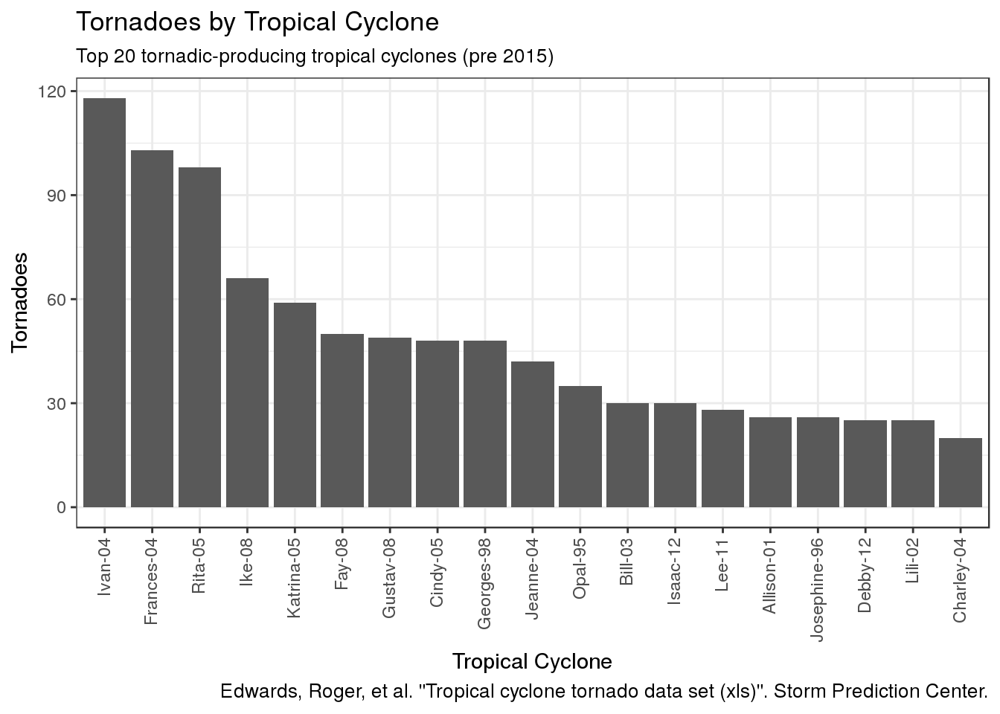

With Hurricane Harvey seemingly producing numerous tornadoes (many unconfirmed touchdowns) I wanted to get a view of the top tornadic-producing tropical cyclones.
History of tropical cyclone-spawned tornadoes lists the “Tropical cyclone tornado data set” (xls) as a source. However, this dataset does not include anything post-2015. I am unable to find an updated dataset.
As of this writing, officially Harvey has only produced two tornadoes. But, as a resident of the greater Houston area I can tell you the warnings are flying! So, yea, I’m choosing to look for data rather than shelter down in the bathroom. Priorities, man!
library(dplyr)
library(ggplot2)
library(readxl)
library(stringr)url <- "http://www.spc.noaa.gov/misc/edwards/TCTOR/tctor.xls"
tmp <- tempfile()
f <- download.file(url, destfile = tmp)
df <- read_xls(path = tmp, sheet = "By TC")
names(df) <- str_replace_all(names(df), " ", ".")
df <- df[complete.cases(df),]df %>%
filter(!(TC.Name == "TOTALS")) %>%
top_n(20, Tors) %>%
ggplot(aes(x = reorder(TC.Name, -Tors, sum), y = Tors)) +
geom_bar(stat = "identity") +
theme_bw() +
theme(axis.text.x = element_text(angle = 90, vjust = 0.4, hjust = 1)) +
labs(title = "Tornadoes by Tropical Cyclone",
subtitle = "Top 20 tornadic-producing tropical cyclones (pre 2015)",
caption = "Edwards, Roger, et al. \"Tropical cyclone tornado data set\ (xls)\". Storm Prediction Center.",
x = "Tropical Cyclone",
y = "Tornadoes")